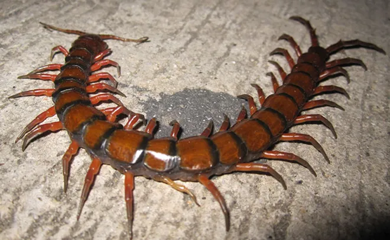
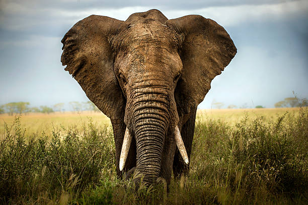
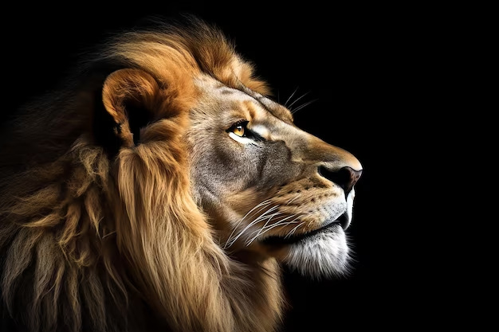
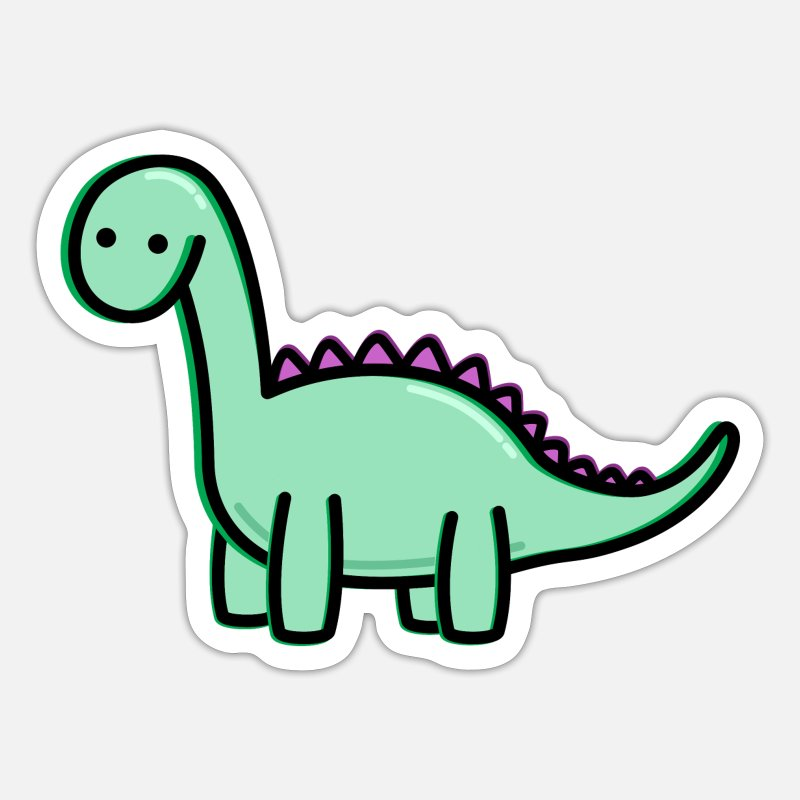
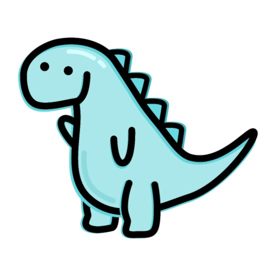
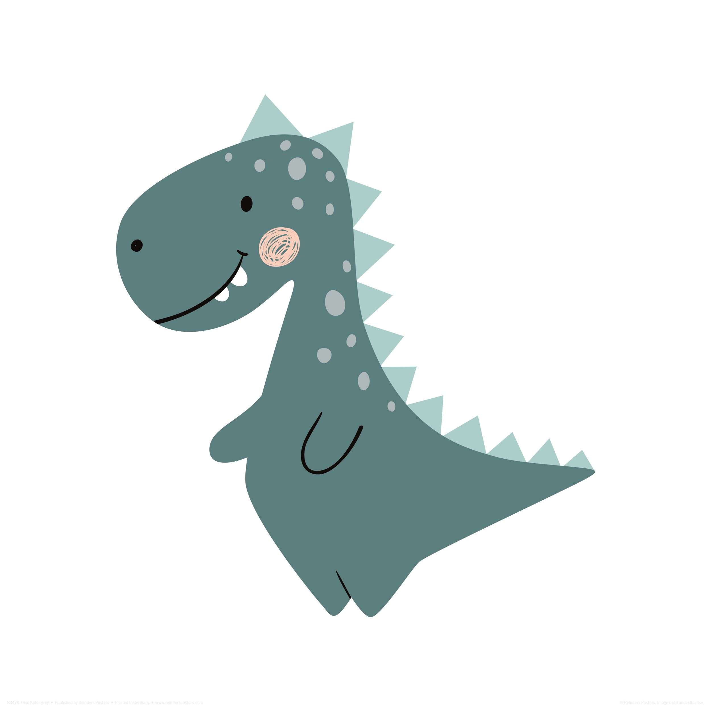

Ah, birds—the feathered marvels of the sky! These avian wonders are nature's very own comedians, putting on daily shows with their chirps, tweets, and occasional squawks that sound suspiciously like your neighbor's car alarm. Whether it's the majestic eagle soaring with the confidence of a seasoned pilot or the humble pigeon bobbing around with all the grace of a tipsy tourist, birds add a splash of color and a dash of entertainment to our lives. And let's not forget their mysterious migratory patterns; it's like they have a better travel itinerary than most of us! So, next time you see a bird, give it a nod of appreciation—for its beauty, its songs, and for always keeping the skies a little more interesting.


Ah, insects—the tiny titans of the natural world! These miniature marvels are nature's diligent workers, each playing a vital role in the grand tapestry of life. Whether it's the industrious ant, tirelessly building its intricate underground cities, or the delicate butterfly, fluttering by with wings like stained glass, insects bring a buzz of activity to our days. Their intricate behaviors and fascinating lifecycles are like nature's own soap operas, full of drama and transformation. So, next time you see an insect, give it a nod of appreciation—for its hard work, its beauty, and for always keeping the world a little more interesting.


Ah, mammals—the warm-blooded wonders of the land! These furred and fascinating beings are nature's very own caretakers, nurturing their young with tender affection and a mother’s instinct. From the towering elephants, guardians of the savannah with memories as vast as their size, to the playful dolphins, acrobats of the ocean with an intelligence that rivals our own, mammals bring life and vibrancy to every corner of the earth. The agile monkeys swing through the trees with the grace of seasoned gymnasts, while the loyal dogs at our feet remind us of the beauty of companionship. So, next time you see a mammal, give it a nod of admiration—for its nurturing spirit, its diverse forms, and for making our world a richer, warmer place.



Ah, dinosaurs—the titans of a bygone era! These colossal creatures are nature's ancient marvels, roaming the Earth with an awe-inspiring presence that still captivates our imaginations. Whether it's the fierce Tyrannosaurus Rex, ruling its domain with unmatched ferocity, or the gentle Brachiosaurus, stretching its long neck to nibble leaves from the tallest trees, dinosaurs painted the prehistoric world with their majestic forms. Their mysterious extinction adds a layer of intrigue to their legacy, like an unsolved riddle of nature's grand design. So, next time you see a dinosaur skeleton or watch a documentary, give a nod of appreciation—for their grandeur, their mystery, and for always keeping the past a little more fascinating.